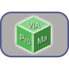
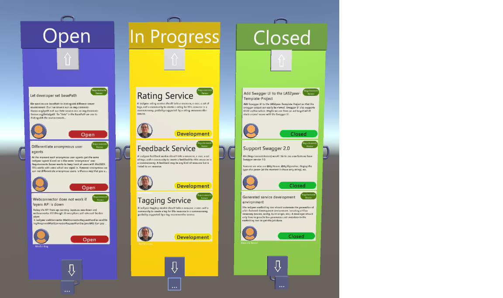
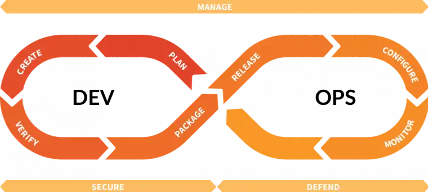

AR Agile Project Management
AR Agile Project Management
This chapter gives an overview on agile project management, in particular the agile management of software development for augmented or mixed reality environments. Often, AR developers are not used to agile project management, agile software development methods or the DevOps Tool Chain. Moreover, AR developers are not used to working in larger teams. If you have to conduct a larger development project and want to use agile methods, this chapter is the right starting point. All needed concepts for agile project management are introduced. To support agile project management in augmented reality, we have set up an experimental mixed reality environment called VIAProMa (Virtual Immersive Analytics for Project Management).

VIAProMa is a Collaborative Mixed Reality Visualization Framework for Immersive Analytics. It is developed by a team of developers using agile methods. Therefore, it serves as a demonstrator for this chapter. In the course of the chapter, we will use examples and screenshots from the VIAProMa environment.
In the traditional waterfall model of software engineering, the different phases of the software engineering process are followed in a sequential manner, usually without returning to a phase already finished. The output of the early phases are usually documents while software is only produced in later phases. With the model, design errors can be captured before the implementation phase. The technical documentation is part of the plan and because of the structured approach, costs can be estimated quite well. Customers however, find it difficult to state their requirements in an abstract way. The waterfall model does not cater for possibility of changing requirements. The waterfall model was modified after a number of issues identified in practice, but in the end, the agile approach became the dominant one.
Agile Development Features
The agile development approach was initiated mainly by developers not satisfied with the strict process management tools applied in the traditional waterfall model, leading to overwork, working on documents instead on code, lacking communication with the customer and lacking communication with co-developers.
Kent Beck wrote in the agile manifesto:
Individuals and interactions over processes and tools
Working software over comprehensive documentation
Customer collaboration over contract negotiation
Responding to change over following a plan
Meanwhile to agile manifesto was signed by thousands of people.
Agile Development Features
Agile development emphasizes incremental updates. Therefore, the process is divided into small design steps with frequent customer interactions. The focus is on delivering working software frequently. Because of the small, incremental process steps and the agility of the process, developers are better motivated and in consequence produce better software. Projects with agile methods have a higher probability of success. Also empirically proven, a recent report says that over 94% of companies today develop software with agile methods.
- Emphasizes incremental updates
- Small design steps by frequent interactions with customers
- Delivers working software frequently
- Motivated people produce better results
- Projects with agile methods have higher probability to end successfully
Scrum
Official documentation in https://scrumguides.org/
- Scrum accepts that the development process cannot be foreseen
- Scrum does not reduce complexity but structures it into chunks
- No formal contract specification
- Scrum team members have fixed roles
- Requirements are collected in backlogs
- Development process is organized in sprints
Scrum Roles
- Product Owner
- Responsible for features and success of product
- Creates and prioritizes user stories
- Has last say on Product backlog
- Development Team
- Self-organized
- Estimates time complexity of tasks
- Derives smaller tasks from user stories
- Independently decides how to fulfil tasks
- Scrum Master
- Responsible for successful Scrum
- Moderation of meetings
- Makes sure developers are fine
- In agile development, (good or bad) results are attributed to the team, not individuals.
- Collective Code Ownership
- Everybody is responsible for all code
- Everyone may change all parts of the code
Sprint Activities
- Daily Scrum
- 15 minutes meeting in the morning
- Postpone detailed discussions
- Sprint review at the end
- Sprint team updates Product Backlog
- Stakeholders are asked
- Product owner notes down feedback
- Sprint retrospective
- Self-reflection within team
- Moderated and organized by Scrum master Sprint activities are designed for full time development teams in companies. How much of the sprint activities can be done in the context of a lab or a course depends very much on the schedules of the students. If there is no opportunity to do a 15 minutes meeting in the morning, it may be replaced by an online meeting, for example.
Sprint Artifacts
- Product Backlog
- List of User Stories
- Prioritized by Product Owner
- Entries should be user-oriented, not technical
- Sprint Backlog
- Refined chunks out of Product Backlog
- Defined by developers
- Doable within a sprint
User Stories
- User stories represent the customer requirements
- Each user story
- Describes one piece of functionality of the system
- Is written with customer/user requirements in mind
- Is given a certain priority in the Product Backlog
- Stands for one or several tasks that are later split into chunks for the Sprint Backlog
A typical user story structure: “As a ROLE, I want GOAL/DESIRE, so that BENEFIT”
Task Boards
Task boards are common in agile software development to organize work in sprints. They give an easy overview on the progress reached in the sprint. Task boards can be physical boards in an office, when all developers are in the same place or a virtual board, which is typical for distributed development like in open source software development. Some developer teams do both physical and virtual boards, e.g. physical ones for local sprints and virtual ones for the global process. task boards consist of columns where tasks usually shift from left to right to visualize the grade of completion from ToDo to Done. Typical columns for a sprint are:
- Product Backlog The User Stories
- ToDo The Sprint Backlog
- In Progress All tasks currently in development
- Review All finished tasks to be reviewed by a team member
- Done All finished and reviewed tasks
In the figure you can see a visualization of a task board in our VIAProMa environment. It has three columns: Open, In Progress, and Closed. The three columns have different colours, which can be chosen from the menu. 
Definition of Done
- All the quality criteria
- Code Style Guides
- Code Reviews (who, how, …)
- Source Control
- Continuous Integration
- Test Coverage
- Documentation
This is your first user story: “As a developer, I want to settle the Definition of Done to achieve a better overall quality of our software.”
Text
Code Style Guides
- Coding standards define …
- Naming conventions
- Indentation
- Documentation
- Encoding
- Helpful for Collective Code Ownership within small teams, indispensable for open source
- E.g. Google’s Java style guide
- [https://google-styleguide.googlecode.com/svn/trunk/javaguide.html]
Code Review
- Improve communication in teams
- Goal: team members understand each other’s code
- Individual improvements
Source Control
- Central code hosting and revision control system
- What file changed?
- Who made changes?
- When were the changes done?
- How do the changed files differ?
- Why were they changed?
- Keeps history graph, allow to revert modifications
- Allows branching and merging
- Branching: Duplication of code so that modifications can happen in parallel
- Merging: When bringing together two branches
Source control tools like Git have the option to create different branches. Branches are a way of managing different states of the project in parallel. When a new branch is created, the project’s content, e.g. the code, is duplicated internally. Subsequent committed changes are only applied to the currently active branch. Branches can be merged into each other. This combines the changes which have been applied on both branches. The merge operation can be performed automatically and only requires manual intervention if there are merge conflicts. Merge conflicts arise if the same content in a file was edited on both branches.
Software projects can structure branches using different git-workflows. A popular example is the git-flow workflow (Driessen, 2010). It consists of a master-branch, a develop-Branch, feature branches, release branches and hotfix-branches.
For Web apps which do not require explicit version releases, a GitHub flow is suitable. Feature are developed on different branches. If a feature has been finished, a merge request is created, it is reviewed and dicusssed and finally, the branch is merged into the master branch.
Continuous Integration
- How to deliver working software at any time?
- Running automatic nightly builds
- Automated test runs
- Prevents Integration Hell
- Continuous Integration Software
- Jenkins: Open source self-hosted
- Travis CI: Hosted solution
Integration Hell: Integration problems because of missing early testing. There is even more than that. If you ever wondered why you have Facebook app updates multiple times a day, here is the answer.
Continuous Delivery and Continuous Deployment
Continuous practices, i.e., continuous integration, delivery, and deployment, are the software development industry practices that enable organizations to frequently and reliably release new features and products (Shahin et al., 2017). Continuous Delivery is about removing stress at the last mile.
- Continuous Integration is just the first steps
- Continuous Delivery
- Software always production ready
- Releasing automatically at the end of development and test pipeline
- Continuous Deployment
- Deploying released software automatically
- Post deploy tests to ensure integrity with service landscape
Scrum in a Nutshell
At the Beginning
- Chose the Scrum Master of your team
- Clarify the role of the Product Owner with your customer: Make them aware of their role!
- Talk with your customer and write down User Stories
Per Sprint
- Break up some of the user stories from the Product Backlog to realistic tasks for the Sprint Backlog
- Define/Refine your Definition of Done
- Develop!
- The burndown chart shows the remaining work in the sprint.
- Finish with the sprint review
- Talk with the customer
- Refine the product backlog for the next Sprint
Market Analysis
Market analysis is the process of analyzing data to help you understand which products and services are in demand, and how to be competitive. Markets are places where customers who are willing to buy a product or a service can meet the sellers of those products and services. From the view of the sellers, markets are people who are willing to pay. For market analysis, it is important to come up with numbers.
- How much can I charge for a product?
- How many potential buyers are there?
- How many potential customers will be interested in my product? A market analysis can also include an analysis of the competitors.
- Who are the companies offering a similar product or a service?
- What do they charge for their product?
- What are their product features?
Market segmentation is the strategy of dividing broad market into subsets of consumers who have common needs and characteristics. Types of market segmentation are:
- Behavioural
- Knowledge of the product
- Attitude
- Benefits
- Psychographic -Studying : activities, interests and opinions (luxury car)
- Demographic
- Age, gender, occupation, education level, etc.
- Geographic
- Country, cities, postal codes (swimming suits)
- Occasional -Independent of the customer (Coca Cola campaign – being thirsty)
- Cultural
How to best segment a market?
- Choose a segment that is accessible to you
- University, friends, colleagues
- Short selling cycle
- In B2B – contact direct decision makers
- Segments with less competitors
Understanding a user helps you to decide what product features to build next. Talk to potential users and find out about their needs. A persona is a representation of a user, typically based off user research and incorporating user goals, needs, and interests. See more on http://www.uxbooth.com/articles/creating-personas/
Analyse your competitors. Ask your (potential) users
- Do they have any concerns about the idea?
- Why they use your services?
- Key points to focus on:
- Quality
- Price
- Advantages & disadvantages
Analyse your competitive advantages and disadvantages. Five P‘s of marketing
| Product | Price | Promotion | Place | People |
|---|---|---|---|---|
| Do you have features others do not have | Same value but lower price | Unique channels | Unique place to sell the product | Strength of the team |
Without customers, your business does not exist!
- Who are the users?
- How much they will pay?
- Are there any competitors?
- Why your service is better?
We advise to start every project with both a market study and a technical feasibility study. Students will learn to focus on products not technologies but learn to assess technical risks of the development process.
DevOps
We have a look at the emerging industry DevOps approach. DevOps is a recent software engineering methodology, its success indicated by growing numbers of supporters. The main idea is to bring developer teams (Dev) and IT operations teams (Ops) closer together for a more efficient process of delivering IT services to end-users, thus striving for quality, including maintenance, from the start.
Bass et al. (Bass et al., 2015) define DevOps as “a set of practices intended to reduce the time between committing a change to a system and the change being placed into normal production, while ensuring high quality.” These practices include continuous integration, delivery, and deployment – the software development industry practices that enable organizations to frequently and reliably release new features and products. Continuous Delivery will help us relieve stress at the last mile.
The figure shows the essential DevOps steps. DevOps tools thereby support us in the integration of work processes, communication, and collaboration (issue tracking, revision control, continuous integration).

Main question is how to design and develop innovative software artefacts in a large-scale project? Observation from industry: A culture of communication between developers and operations
| Developers | Operations |
|---|---|
| New features | Stability |
| Specific tools | Managing systems |
| Needs to work fast | Need to keep systems running |
DevOps Toolchain
A toolchain is a set of tools used for covering all DevOps categories.
Integration, automation, and monitoring scales. Agile and DevOps serve complementary roles: rapidly producing software artifacts in an agile way (DevOpsUse).
Requirements Engineering
What is a requirement?
What is requirements engineering?
The Requirements Bazaar is a Web-based open continuous innovation platform. It is easy to use for end users Social features like likes and comments enable the communication between end users and developers. Open APIs to embed it into apps.
DevOpsUse
DevOpsUse is a conceptual extension of the standard DevOps cycle, adding an additional loop for end-user participation regarding innovation, design, and evaluation, paired with immersive analytics support.
We reflect end-user contributions for ‘ideas and needs’, ‘co-design’, ‘feedback from beta-tests’, and better understanding of the user base ‘context’, ‘practical experience’, etc.
In order to support end-user groups with consumer-friendly web apps for the DevOpsUse methodology, we can draw on a range of tools of the DevOps chain.
More details on the DevOpsUse methodology and its tools is available on http://results.learning-layers.eu/, with webcasts for the tools.

- Scalable and sustainable methodology for integration
- Software development
- Operations
- End-user participation
- Strong commitment to participatory design and evaluation activities carried out in communities of practice
Minimal Viable Product
A minimal viable product (MVP) is an early prototype of a system for getting feedback from customers (Ries, 2011).
An MVP must have four key elements for achieving product quality
- Functionality
- Design
- Reliability
- Usability
It has enough of the four key elements that people are willing to use or to buy it. It should show enough potential for retaining first customers and it should initialize a development cycle with feedback from the customers.
Wrap-Up
- You heard about the Agile Manifesto
- You know that Scrum follows agile principles
- You know what Taskboards are
- You will look into a Code Style Guidelines
- You already knew about source control systems
- And finally you probably know what Continuous Integration is good for
Templates and Examples for your own Mixed Reality Classes
Review Specifications
The following specs are for a 12-week course on Mixed Reality with teams of 4-6 people working on a prototype. Four reviews are planned for the course, so that every three weeks there can be a review. The first review is for exercising the agile software development process, for technology and market research as well as for first DevOps activities. The second review should report on the first one or two sprints of the team and how they have started the development process. The third review should cover more DevOps activities like testing and documenting the prototype. The last review is planned as business pitch with a strong focus on selling a product.
Review 1
- Prioritized Product Backlog: Compile the initial version of your Product Backlog by ordering the user stories based on their priority (most important on top)
- Definition of Done: List the initial quality criteria for your code and explain shortly
- Market Analysis: Provide a concise analysis of the market for your product; use a suitable subset of elements that were presented during the tutorial days
- Technology Survey: List and briefly describe existing technologies, tools and techniques that are relevant for your project
- Reflection: Provide a short written reflection of your teamwork process and progress as a community of practice
- Running Skeleton: A basic development project that should be buildable and reflect your current development state
- Presentation Slides: Prepare a 10 min presentation for the first review and for a discussion afterwards.
As a guideline, the presentation slides should contain key information contained in the above documents:
- Agenda/overview
- Project info and objectives
- Market analysis
- Technology survey
- Scrum: Your roles, compressed info on the last sprint, like Product/Sprint Backlog
- Reflection on team process
- Conclusion and next steps
Review 2
- Prioritized Project Backlog: Compile a new version of your Project Backlog for the second release.
- Definition of Done: Update the quality criteria for your code and explain.
- Running mock-up of the interface and/or a set of tested (automatically) classes/functions with the core system functionality of your prototype.
- Documentation: Build instructions to run your mock-up and/or tests. Also provide sufficient API/code documentation and an end-user guide.
- A reflection of your group process as community of practice.
- Presentation Slides.
Please prepare a 10 min presentation and prepare for discussion afterwards.
As a guideline, the following bits of info are expected in your presentation:
- Agenda
- Project Backlog and Definition of Done
- Running mock-up and/or system functionality/tests
- Reflection
- Conclusion and further Steps -You may adjust the order and focus depending on your project, of course.
Review 3
- Running system demo (e.g. link, video). Please note, that your system already needs to include all must-haves, so that you can use the remaining weeks to polish it and fix the last bugs.
- Running automatic test cases (e.g. link).
- Detailed documentation of your system for further development. Also provide sufficient API/code documentation and an end-user guide.
- Reflection of your agile development and group process as community of practice.
- Presentation Slides.
Please prepare for a 10 minutes presentation, including demo(!), plus discussion.
As a guideline, the following bits of info are expected in your presentation:
- Agenda
- Product description
- System demo
- CI/CD
- Reflection (agile and group process)
- Conclusion and further steps
- You may adjust the order and focus depending on your project, of course.
Review 4
- Running system demo (e.g. link, video).
- Running automatic test cases (e.g. link, screenshots).
- Detailed documentation of your system for further development. Also provide comprehensive API/code documentation and an end-user guide.
- A reflection of your group process as community of practice (1 page)
- Presentation slides.
Please prepare a 5 min. business oriented presentation of your project plus a 5 min demo of your system and prepare for a short discussion afterwards.
The following five slides are expected to be shown by you
- What is the PROBLEM solved by the product or service you plan to provide?
- What is the quantifiable economic benefit of solving that problem?
- Who, specifically, is your customer? Do they have money? How do they pay you?
- What is your, your teams, or your company’s distinct competitive advantage in providing this product or service to the customer?
- What is the product or service you plan to provide?
- Please act as a company or a start-up presenting to possible customers. Do not present a technology but a product. If you have questions concerning the documents and/or the presentation please contact us.
Instructions for Installing VIAProMa
Instructions for installing VIAProMa can be found here.